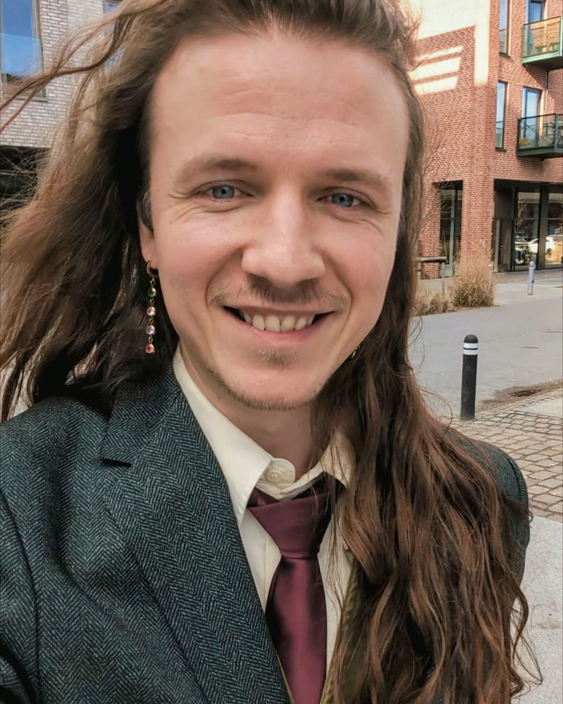
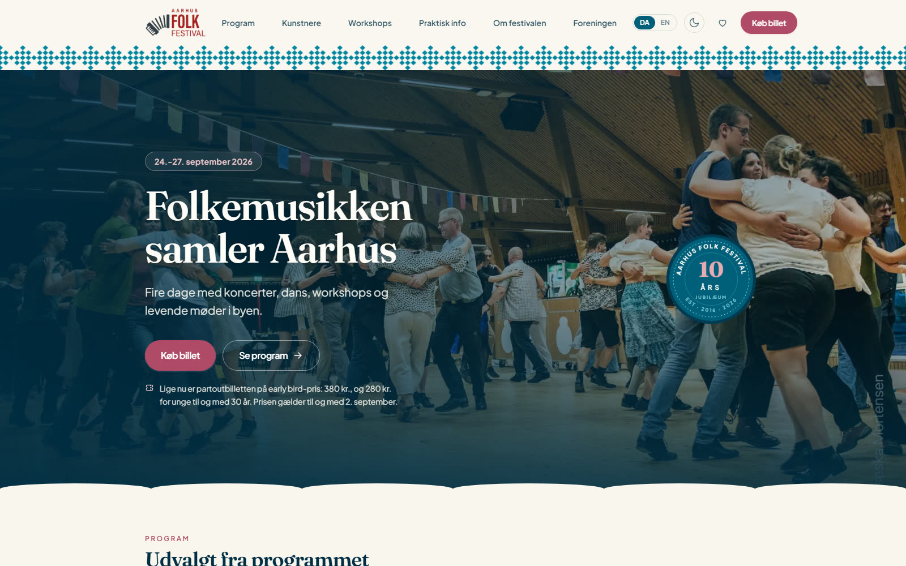
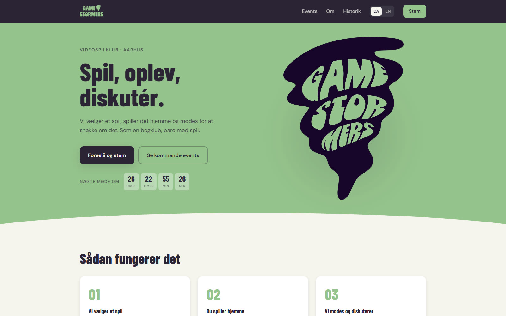
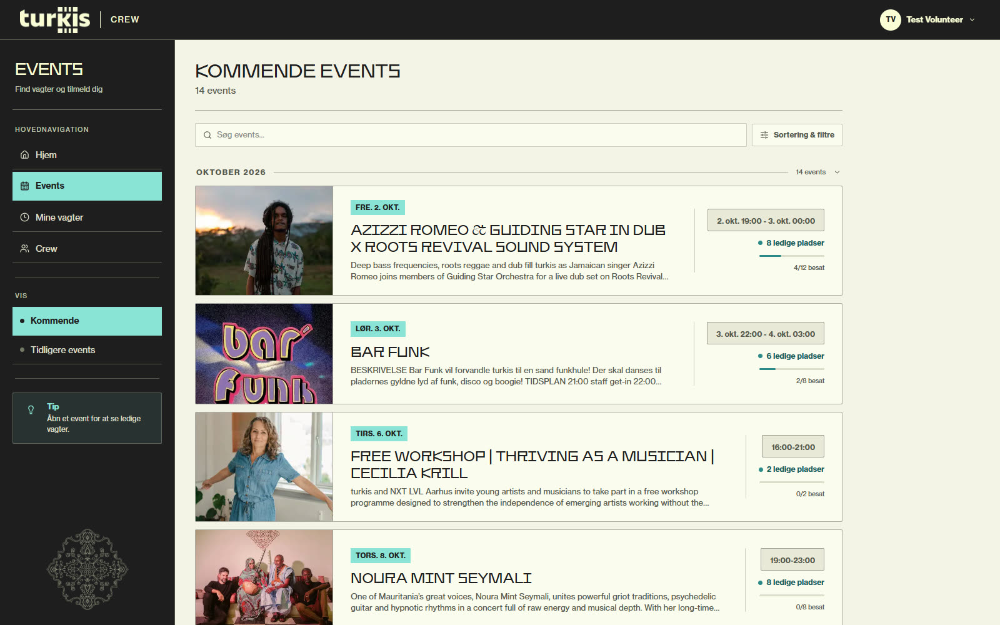
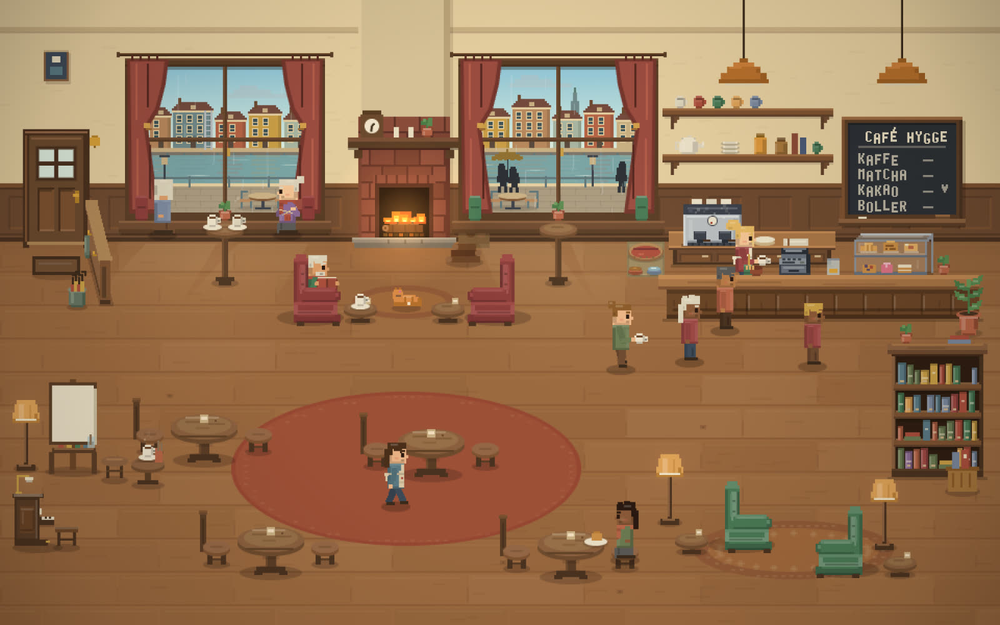

First stop
Hi, my name is Kasper.
I build websites, tools and community projects. Aarhus.
This page is one line with eight stops. My day job is planning a light rail, so it felt right.

Build
Aarhus Folk Festival
Four days of concerts, dance and workshops. I build and maintain the festival's website.

Gather
Aarhus Gamestormers
A game club that works like a book club. I started it; 29 come to the meetings, and 129 are in the Discord community.

Build · Gather
turkis Crew
I built and run the platform now used by turkis, a music venue in Aarhus, for shifts, events and volunteer information. I also volunteer backstage at the venue.

Play
Café Hygge
A pixel café for reading. It runs in the browser while you read a real book.

Change here
Got an idea worth building?
Run a small cultural project, a club, or make art, and your website is missing or bad? Write to me. Sometimes I do it for free.
The form matters less than whether I can be useful. It might be:
- A proper website
- A tool for volunteers
- A hand with an event
About
I'm a traffic controller who keeps building things after work.
At work I make the operational plans for the Aarhus light rail and decide when sections of the traction power are safe to work on. Outside work I build websites, run a game club, and volunteer at a music venue and a folk festival.
- 2022
Traffic controller and electrical control operator, Aarhus light rail
- 2025
Volunteer: turkis, folk festival and game club
- 2018–21
MSc, Science Studies
- 2016–18
BA, Philosophy
- 2008–10
Web integrator